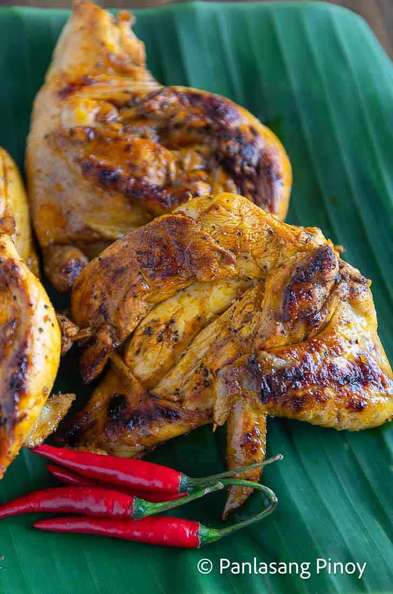

Chicken Inasal

Chicken Inasal plated in a banana leaf with red pepper
Image source: Panlasang Pinoy
One of the hidden gems of the Filipino cuisine is the Inasal na Manok (Chicken Inasal). As a Filipino, merely hearing its name, you will wind up getting hungry for this sizzling and yummy chicken. Its scent and aroma will give you the growl inside your stomach.
Follow me in this recipe guide, as we embark as to how to prepare and serve an Inasal na Manok (Chicken Inasal).
Ingredients:
- 1 whole chicken
- 1 head of garlic
- 1 stalks of chopped lemongrass
- 3 thumbs of ginger with a mortar and pestle
- 1 1/2 teaspoons of salt
- 1/2 teaspoon of ground black pepper
- 1/2 tablespoons of Knorr Sinigang Sampaloc Recipe Mix (original flavor)
- For the basting sauce:
- 1/2 cup of lemon lime soda
- 8 tablespoons of margarine
- 2 1/2 tablespoons of annatto seeds
- salt and pepper
Procedure:
- Cut the chicken into 4 parts
- Marinade the head of garlic, chopped lemongras, and the thumbs of ginger
- Put the crushed ingredients in a large bowl
- Season the bowl with salt, ground pepper, Knorr Sinigang Sampaloc Recipe Mix (original flavor), and the lemon soda.
- Put the chicken inside a resealable bag and pour the marinade inside. (Let the air out before sealing it again).
- Marinade the sealed chicken for 2 hours
- To let the flavors sink in
- Make your basting sauce
- Heat a saucepan
- Add the margarine and let it melt
- In low heat, put the annatto seeds in the saucepan
- Stop heating when the mixture turn orange
- Filter the seeds through a kitchen sieve, and discard the seeds
- Season with salt and pepper and then mix well
- Procede for the grilling process
- Use a gas or charcoal grill
- Heat up your grill
- Remove the chicken from the resealable bag after it is done marinating
- Place the chicken on the grill
- Skewer two sides of the chicken with thick bamboo skewers
- Alternative for thick skewers: double regular-sized skewers for this
- When grilling, flip your chicken every 5 minutes (or when needed) until the inner temperature has become 165°F. Also make sure to brush basting sauce consistently over the chicken
- Wait, until the chicken is cooked
Now, enjoy your juice Chicken Inasal!
You can also add these side dishes to complement:
- Warm rice
- Papaya atchara
- Dipping sauce (e.g. soy sauce, chicken oil)
Ingredients and Procedure are derived from Panlasang Pinoy. You can also check out his, Vanjo Merano's, video as he demonstrates how to prepare a Chicken Inasal.
Home